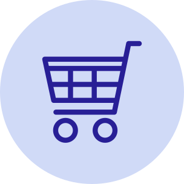
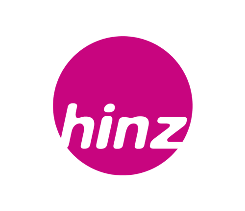
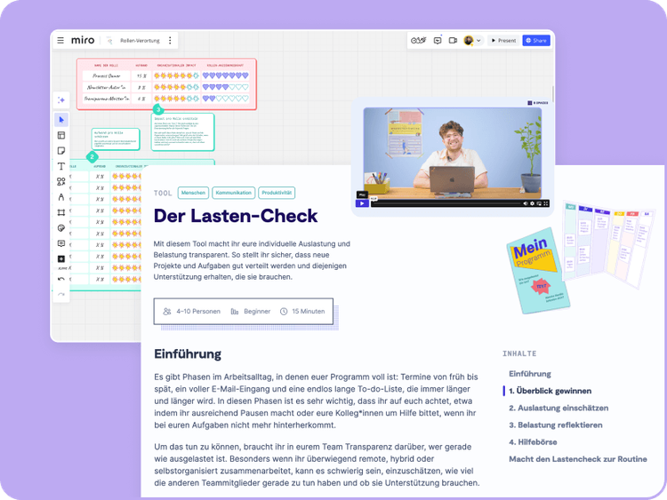

Solo
1 Zugang
299€
pro Jahr
zzgl. MwSt
Jährliche Abrechnung, jederzeit kündbar
Egal ob Kampagnenlaunch oder Produktinnovation, starke interne Zusammenarbeit schafft Wirkung nach außen und umgekehrt. Mit der 9 Spaces Workshop-Plattform bringt ihr beides zusammen.

Hier erfahrt ihr, wie ihr Zusammenarbeit in der Konsumgüter- & E-Commerce-Branche neu denkt.

Mit mehr als 150 praxiserprobten Workshop-Methoden für online und vor Ort bringt 9 Spaces Struktur in die Produktentwicklung, Kampagnenplanung und internen Prozesse.

Wettbewerbsdruck & Time-to-Market: Bis 2025 erwarten 55 % der B2B-Expert*innen, dass mehr als die Hälfte aller Unternehmenseinkäufe online stattfinden. Schnelligkeit und Agilität sind entscheidend – doch oft fehlt es an Struktur und Fokus im Team.
Fehlende Klarheit in Prozessen & Zuständigkeiten: Gerade bei cross-funktionaler Zusammenarbeit (z. B. Produkt, Marketing, Supply Chain) hakt es oft: Wer macht was? Wo sind die Engpässe? Was fehlt zur Umsetzung?
Kommunikationschaos & Silos: Ob Remote oder hybrid – viele Teams arbeiten aneinander vorbei. Das bremst Entscheidungen und Kampagnen.
Effizient zusammenarbeiten: Unsere Workshop-Tools helfen euch, Klarheit in Aufgaben, Zuständigkeiten und Prioritäten zu bringen, damit aus Ideen schneller Ergebnisse werden.
Mehr Struktur mit wenig Budget: Mit anpassbaren Whiteboards, klaren Workflows und praxiserprobten Methoden bringt ihr eure Produkt-, Marken- oder Kampagnenarbeit auf den Punkt, auch ohne großes Budget oder externe Beratung.
Wissen und Prozesse sichtbar machen: Ob Kampagnenplanung oder Launch-Check-in – mit 9 Spaces lernt ihr Entscheidungen zu dokumentieren, holt alle an einen Tisch und arbeitet flüssig und iterativ statt im Blindflug.
Quellen: Statista I, Statista II, Statista II, Handelsblatt, Deloitte
Ob Produkte schneller entwickeln, Teams besser verzahnen oder Kampagnen effizienter planen – wir haben Tools, die euch genau da unterstützen, wo es gerade hakt.
Den KI-Facilitator gibt’s exklusiv im Business- und Enterprise-Plan.

zzgl. MwSt
Jährliche Abrechnung, jederzeit kündbar
Zugang für mehrere Mitarbeitende in einem maßgeschneiderten Plan
Unser Team unterstützt dich und dein Team gerne dabei, die perfekte Lösung für eure Organisation zu finden.